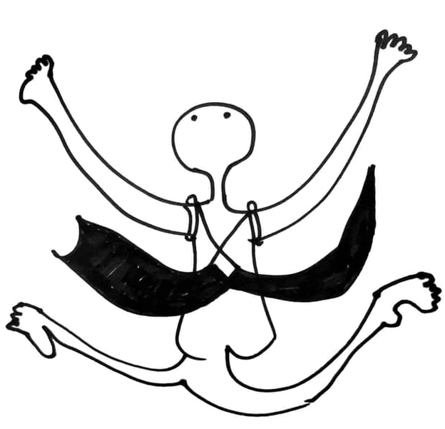

傅雅雯/Ya-Wen Fu
Media artist
Email: info@tamtamart.de

Impressum | Legal Notice
Site owner: Ya-Wen Fu
Adress: Leipziger Baumwollspinnerei, Halle 14, Studio 12 ,
Spinnereistraße 7, D-04179 Leipzig/Germany
Email: info@tamtamart.de
Inhaltlich verantwortlich gemäß § 55 Abs. 2 RStV:Ya-Wen Fu
STREITSCHLICHTUNG Die Europäische Kommission stellt eine Plattform zur Online-Streitbeilegung (OS) bereit: http://www.ec.europa.eu/consumers/odr. Meine E-Mail-Adresse finden Sie oben im Impressum. Ich bin nicht bereit oder verpflichtet, an Streitbeilegungsverfahren vor einer Verbraucherschlichtungsstelle teilzunehmen.
DATENSCHUTZ Die Nutzung meiner Webseite ist in der Regel ohne Angabe personenbezogener Daten möglich. Soweit auf meiner Seite personenbezogene Daten (beispielsweise Name, Anschrift oder eMail-Adressen) erhoben werden, erfolgt dies, soweit möglich, stets auf freiwilliger Basis. Diese Daten werden ohne Ihre ausdrückliche Zustimmung nicht an Dritte weitergegeben. Ich weise darauf hin, dass die Datenübertragung im Internet (z.B. bei der Kommunikation per E-Mail) Sicherheitslücken aufweisen kann. Ein lückenloser Schutz der Daten vor dem Zugriff durch Dritte ist nicht möglich. Der Nutzung von im Rahmen der Impressumspflicht veröffentlichten Kontaktdaten durch Dritte zur Übersendung von nicht ausdrücklich angeforderter Werbung und Informationsmaterialien wird hiermit ausdrücklich widersprochen. Als Betreiberin der Seite behalte ich mir ausdrücklich rechtliche Schritte im Falle der unverlangten Zusendung von Werbeinformationen, etwa durch Spam-Mails, vor. HAFTUNG FÜR INHALTE Als Diensteanbieter bin ich gemäß § 7 Abs.1 TMG für eigene Inhalte auf diesen Seiten nach den allgemeinen Gesetzen verantwortlich. Nach § 8 bis 10 TMG bin ich als Diensteanbieter jedoch nicht verpflichtet, übermittelte oder gespeicherte fremde Informationen zu überwachen oder nach Umständen zu forschen, die auf eine rechtswidrige Tätigkeit hinweisen. Verpflichtungen zur Entfernung oder Sperrung der Nutzung von Informationen nach den allgemeinen Gesetzen bleiben hiervon unberührt. Eine diesbezügliche Haftung ist jedoch erst ab dem Zeitpunkt der Kenntnis einer konkreten Rechtsverletzung möglich. Bei Bekanntwerden von entsprechenden Rechtsverletzungen werde ich diese Inhalte umgehend entfernen.
|
copyright©Ya-Wen Fu and VG Bild Kunst, All rights reservered.
All work is copyrighted, please contact me for reproduction in any format.
We cannot assume any liability for the content of external pages.
Solely the operators of those linked pages are responsible for their content.
t Berlin
Since 2007 Studies in Media Arts, HGB Academy of Visual Arts Leipzig, Intermedia Class of Prof. Alba D`Urbano
Exhibitions
2010 “Touch me!” Galerie Sylvia Bernhardt, Wiesbaden
2010 “Chain of Fools” HGB Academy of Visual Arts Leipzig
2009 “Untitled” Leipzig
2009 “Kampf” Berlin
2004 Installation “Through” Taipei, Taiwan
2002 “Motions and Images” Taipei, Taiwan
2002 “Spiel” Taipei, Taiwan
2001 “Mandarins” Taipei, Taiwan
2000 Exhibition of Graphic Design, Taipei, Taiwanm